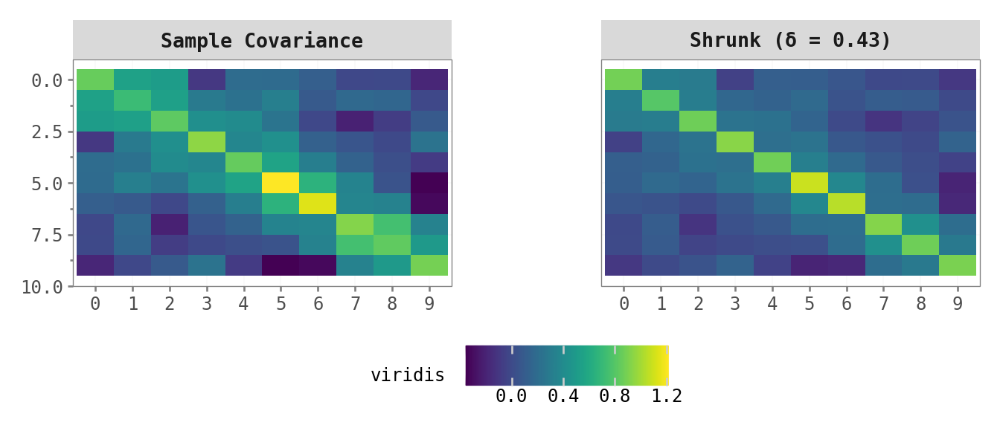

Covariance Shrinkage: From Linear Shrinkage to Random Matrix Theory
Quantitative Finance
Python
High-Dimensional Statistics
Author
Jan Schlegel
Published
November 23, 2025
Abstract
In high-dimensional regimes where the number of variables \(N\) is comparable to the sample size \(T\), the sample covariance matrix is known to be an ill-conditioned and noisy estimator of the population covariance. This post provides a rigorous mathematical treatment of covariance shrinkage, exploring the bias-variance tradeoff inherent in linear shrinkage estimators (Ledoit-Wolf). We further ground these methods in Random Matrix Theory, specifically the Marchenko-Pastur law, to characterize the asymptotic behavior of eigenvalues. Finally, we introduce and implement Nonlinear Shrinkage (Ledoit-Wolf 2020), which applies a non-linear transformation to the sample eigenvalues based on the estimation of the Stieltjes transform. Simulation studies demonstrate the efficacy of these methods in recovering true spectral properties.
1 Introduction
The estimation of the covariance matrix \(\Sigma \in \mathbb{R}^{N \times N}\) is a fundamental problem in multivariate statistics, essential for portfolio optimization, risk management, and dimensionality reduction. The standard estimator, the sample covariance matrix \(S\), is unbiased and converges to \(\Sigma\) as the sample size \(T \to \infty\) while \(N\) remains fixed. However, in modern applications such as genomics and finance, we often face the “large \(N\), small \(T\)” regime, or more generally, the asymptotic regime where both \(N, T \to \infty\) such that \(N/T \to q \in (0, \infty)\).
In this regime, \(S\) becomes ill-conditioned or singular (if \(N > T\)). Even when invertible, its eigenvalues are systematically distorted: small eigenvalues are underestimated, and large eigenvalues are overestimated. This phenomenon is rigorously described by Random Matrix Theory (RMT).
This post explores three major approaches to mitigate these issues. Linear shrinkage (Ledoit and Wolf 2004) pulls the sample covariance towards a structured target to reduce estimation variance at the cost of some bias. Spectral analysis via the Marchenko-Pastur law (Marchenko and Pastur 1967) characterizes the limiting distribution of eigenvalues to understand the nature and magnitude of the distortion. Nonlinear shrinkage (Ledoit and Wolf 2022) then uses this spectral understanding to optimally correct each eigenvalue individually, recovering the population spectrum far more accurately than any linear method can.
2 Linear Shrinkage Estimation
Let \(X\) be a \(T \times N\) matrix of i.i.d. observations with mean zero and covariance \(\Sigma\). The sample covariance matrix is \(S = \frac{1}{T} X^\top X\). While \(\mathbb{E}[S] = \Sigma\), the variance of the entries of \(S\) can be large when \(T\) is not sufficiently larger than \(N\). Linear shrinkage proposes an estimator \(\hat{\Sigma}_{shrink}\) that is a convex combination of the sample covariance \(S\) and a highly structured target estimator \(F\) (e.g., the identity matrix scaled by average variance):
The shrinkage intensity \(\delta\) controls the balance between the two components. The sample covariance \(S\) has zero bias but high variance, while the target \(F\) has high bias but low variance (it has few parameters). The shrinkage estimator \(\hat{\Sigma}_{shrink}\) balances bias and variance to minimize the Mean Squared Error.
Ledoit and Wolf (2004) derived the optimal \(\delta^*\) that minimizes the expected Frobenius norm of the error:
\[
\delta^* = \frac{\mathbb{E}[\| S - \Sigma \|_F^2]}{\mathbb{E}[\| S - F \|_F^2]}
\]
Intuitively, this ratio represents the variance of the sample covariance divided by the total mean squared error of the sample covariance relative to the target. While this formula depends on the unknown true covariance \(\Sigma\), Ledoit and Wolf (2004) derived consistent estimators for the numerator and denominator using only the sample data \(X\). By estimating the asymptotic variance of the entries of \(S\), we can compute a practical \(\hat{\delta}^*\) without ever knowing \(\Sigma\).
Code
def ledoit_wolf_shrinkage(X):""" Computes the Ledoit-Wolf shrinkage estimator towards the identity matrix. """ T, N = X.shape S = np.cov(X, rowvar=False)# Target F: Identity scaled by average variance mu = np.trace(S) / N F = mu * np.eye(N) X_c = X - X.mean(axis=0) cov = S# d2: squared Frobenius distance between S and F d2 = np.sum((cov - F)**2)# b2: estimated asymptotic variance of S b2 =0for i inrange(T): x_i = X_c[i, :].reshape(-1, 1) diff = x_i @ x_i.T - cov b2 += np.sum(diff**2) b2 = b2 / (T**2) b2 =min(b2, d2) delta = b2 / d2 shrunk_cov = delta * F + (1- delta) * covreturn shrunk_cov, delta
To visualize what linear shrinkage does, the heatmaps below compare the sample covariance and the shrunk covariance for a small banded covariance structure with \(N = 10\) and \(T = 20\). The sample covariance exhibits noisy off-diagonal elements, while the shrunk version dampens this noise and preserves the underlying structure.
/tmp/ipykernel_362154/246008557.py:9: RuntimeWarning: covariance is not symmetric positive-semidefinite.

3 The Marchenko-Pastur Law
When \(N\) and \(T\) are both large, the eigenvalues of the sample covariance matrix \(S\) of a random matrix \(X\) with i.i.d. entries (mean 0, variance \(\sigma^2\)) are not concentrated around \(\sigma^2\). Instead, they spread out according to a deterministic probability density function known as the Marchenko-Pastur law (Marchenko and Pastur 1967).
Let \(q = T/N\). If \(q \ge 1\), the eigenvalues \(\lambda\) of \(S\) are distributed on the interval \([\lambda_-, \lambda_+]\) with density:
If \(N > T\) (\(q < 1\)), there is an additional point mass at zero of weight \(1 - T/N\). This distribution explains why sample covariance matrices appear to have “structure” (large leading eigenvalues) even when the data is pure noise.
The intuition is straightforward. The sample covariance matrix is constructed to fit the data \(X\). Even if \(X\) is pure noise, there will always be random directions in the high-dimensional space along which the variance of the projected data is larger than average, and others where it is smaller. When \(N\) is large relative to \(T\), the eigendecomposition has many degrees of freedom to find these spurious correlations. The largest sample eigenvalues systematically overestimate the true variance (they capture noise as signal), and the smallest eigenvalues underestimate it. This results in the spectral “smearing” that the Marchenko-Pastur law describes.
Code
def marchenko_pastur_pdf(var, q, pts=1000):"""Generates the Marchenko-Pastur PDF.""" ratio =1/q lambda_min = var * (1- np.sqrt(ratio))**2 lambda_max = var * (1+ np.sqrt(ratio))**2 x = np.linspace(lambda_min, lambda_max, pts) y = (1/ (2* np.pi * var * ratio * x)) * np.sqrt( (lambda_max - x) * (x - lambda_min) ) y = np.nan_to_num(y)return pd.DataFrame({'x': x, 'y': y})
The plot below demonstrates this for \(N = 200\), \(T = 1000\), with all true eigenvalues equal to 1. The histogram of sample eigenvalues matches the theoretical Marchenko-Pastur curve almost perfectly. Note that while every true eigenvalue is exactly 1.0, the sample eigenvalues range from roughly 0.6 to 1.5.
Linear shrinkage is limited because it applies the same shrinkage intensity to all eigenvalues, pulling them uniformly towards the mean. But RMT tells us that the distortion is not uniform: small sample eigenvalues are biased downwards and large ones upwards, and the degree of bias depends on where the eigenvalue sits in the spectrum. A more optimal approach applies a non-linear transformation \(\phi(\lambda_i)\) to each sample eigenvalue \(\lambda_i\) individually.
Ledoit and Wolf (2022) developed a method to estimate this optimal non-linear shrinkage formula. The key quantity is the Stieltjes transform \(m(z)\) of the limiting spectral distribution of the sample covariance matrix. For a complex number \(z \in \mathbb{C}^+\):
where \(\breve{m}(\lambda) = \lim_{\eta \to 0^+} m(\lambda + i\eta)\) is the boundary value of the Stieltjes transform on the real axis. The “Direct Kernel” method estimates \(\breve{m}(\lambda)\) directly from the sample eigenvalues using a Cauchy kernel, avoiding numerical inversion of the QuEST function. In practice, the implementation proceeds in three steps. First, compute the eigendecomposition of \(S\) to obtain eigenvalues \(\lambda_i\) and eigenvectors \(u_i\). Second, estimate the Stieltjes transform at each sample eigenvalue using the kernel estimator \(\hat{m}(\lambda_i) = \frac{1}{N} \sum_j \frac{1}{\lambda_j - \lambda_i - ih}\) where \(h\) is a bandwidth parameter. Third, apply the correction formula to map each \(\lambda_i\) to \(d_i^*\) and reconstruct the estimator as \(\hat{\Sigma}_{nl} = \sum_{i=1}^N d_i^* u_i u_i^\top\).
Code
def nonlinear_shrinkage(X):""" Computes the Nonlinear Shrinkage estimator (Direct Kernel method). Reference: Ledoit & Wolf (2020). """ T, N = X.shape S = np.cov(X, rowvar=False) evals, evecs = np.linalg.eigh(S) idx = evals.argsort() evals = evals[idx] evecs = evecs[:, idx]# Bandwidth for the Cauchy kernel h = T**(-0.35)# Stieltjes transform via Cauchy kernel z = evals +1j* h diff = evals.reshape(1, -1) - z.reshape(-1, 1) m_hat = np.mean(1/ diff, axis=1)# Apply the nonlinear shrinkage formula c = N / T denom = np.abs(1- c - c * evals * m_hat)**2 d_star = evals / denom# Reconstruct Sigma_nonlinear = evecs @ np.diag(d_star) @ evecs.Treturn Sigma_nonlinear, d_star
The core of nonlinear shrinkage is the mapping from sample eigenvalues \(\lambda_i\) to corrected population eigenvalues \(d_i^*\). The plot below shows this mapping for \(N = 500\), \(T = 1000\), with the identity as the true covariance. The characteristic “S-shape” is clearly visible: small eigenvalues are pulled up (above the dashed 45-degree line) and large eigenvalues are pulled down (below it), counteracting the spectral smearing effect predicted by the Marchenko-Pastur law.
We now simulate two scenarios to validate the methods. The first uses pure noise to confirm the Marchenko-Pastur fit (shown above). The second uses a structured covariance matrix to compare the estimation accuracy of all three approaches as the sample size \(T\) increases.
We define the normalized Frobenius loss \(\text{Loss}(\hat{\Sigma}, \Sigma) = \| \hat{\Sigma} - \Sigma \|_F / \| \Sigma \|_F\) and generate data from an AR(1) Toeplitz covariance matrix with \(N = 100\) and correlation parameter \(\rho = 0.5\). For each value of \(T\), we run 20 trials and report the mean loss.
All three estimators converge as \(T\) increases, but the rates differ substantially. In the most challenging regime (\(T = 50\), so \(N/T = 2\)), the sample covariance is by far the worst. Linear shrinkage provides a large improvement by pulling the estimate towards the identity, and nonlinear shrinkage improves further by adapting to the specific spectral shape of the Toeplitz structure. As \(T\) grows, the gap between the methods narrows because the sample covariance itself becomes increasingly accurate.
To visualize the eigenvalue-level correction, we use a spiked covariance model where 10 eigenvalues equal 10 and the remaining 190 equal 1. The scree plot below compares the true population spectrum, the noisy sample eigenvalues, and the nonlinearly shrunk eigenvalues.
The sample eigenvalues overestimate the signal spikes and underestimate the noise floor. The nonlinear shrinkage successfully pulls the large eigenvalues down and the small eigenvalues up, recovering the population spectrum far more accurately.
6 Conclusion
In high-dimensional statistics, the sample covariance matrix is untrustworthy due to the “curse of dimensionality,” which manifests as a deterministic spreading of eigenvalues described by the Marchenko-Pastur law. Linear shrinkage (Ledoit and Wolf 2004) offers a robust improvement by pulling the matrix towards a stable target, effectively reducing variance at the cost of some bias. Nonlinear shrinkage (Ledoit and Wolf 2022) takes this a step further by using Random Matrix Theory to optimally correct individual eigenvalues. It effectively inverts the Marchenko-Pastur equation to recover the population spectrum.
For practitioners, the choice between methods depends on the dimensionality ratio \(N/T\). When this ratio is small (below roughly 0.1), the sample covariance is generally sufficient. In the moderate regime, linear shrinkage is a robust and easy-to-implement baseline that has become standard in finance. When \(N/T\) is large but below 1, nonlinear shrinkage provides significant gains by correcting the specific spectral distortion predicted by RMT, making it ideal for high-dimensional portfolios. In the singular regime (\(N > T\)), shrinkage is strictly necessary. Nonlinear shrinkage remains preferred when \(T\) is reasonably large (say, above 100), but for extremely small samples the estimation of the spectral density becomes noisy and linear shrinkage towards a structured target is often safer.
References
Ledoit, Olivier, and Michael Wolf. 2004. “A Well-Conditioned Estimator for Large-Dimensional Covariance Matrices.”Journal of Multivariate Analysis 88 (2): 365–411.
———. 2022. “The Power of (Non-) Linear Shrinking: A Review and Guide to Covariance Matrix Estimation.”Journal of Financial Econometrics 20 (1): 187–218.
Marchenko, Vladimir A, and Leonid A Pastur. 1967. “Distribution of Eigenvalues for Some Sets of Random Matrices.”Matematicheskii Sbornik 114 (4): 507–36.